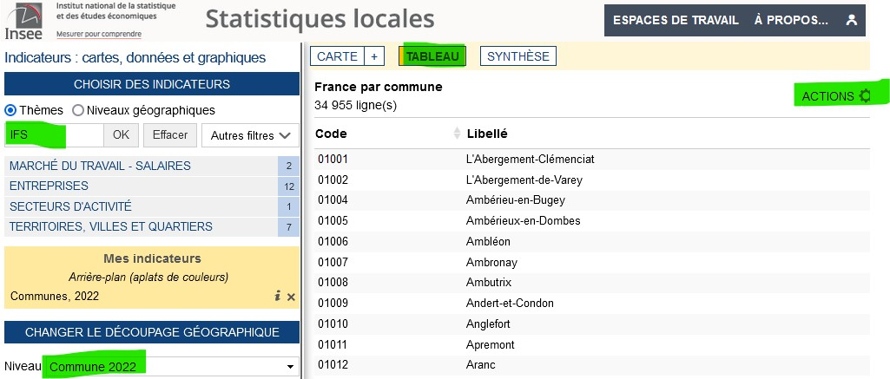
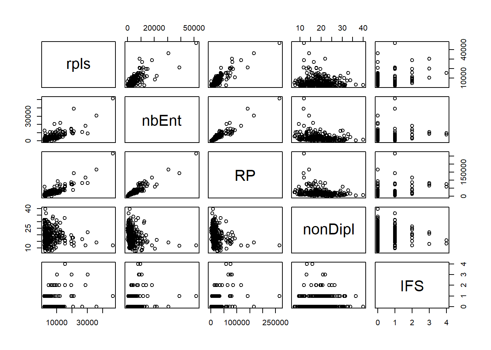
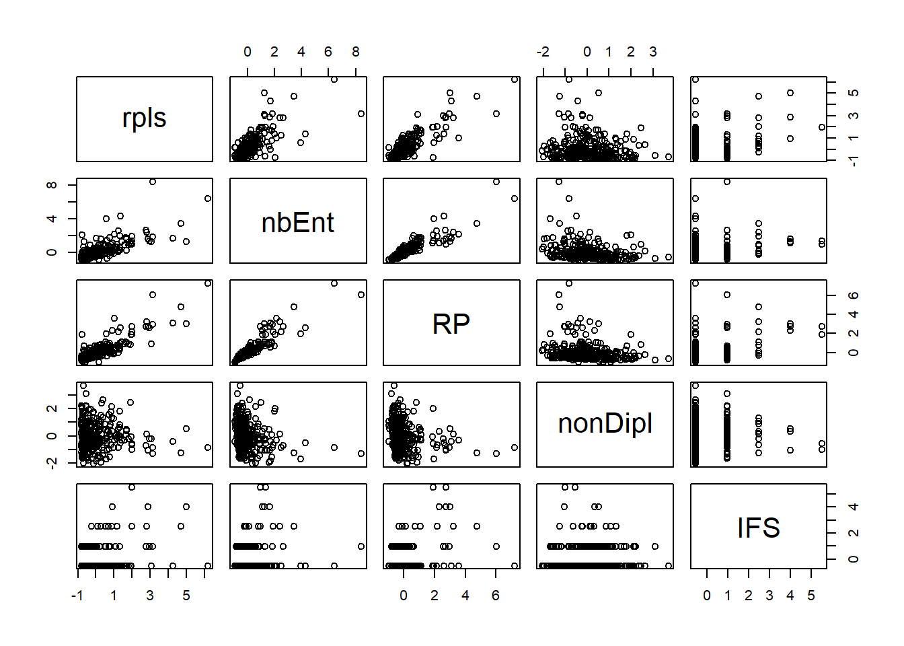

Mutivariées base
1 L’hypothèse
1.1 Une démarche d’exploration
On parle ici d’analyse factorielle. Il ne s’agit pas de facteur explicatif mais de synthèse, de résumé, de description.
Comme toujours, c’est la préparation des données qui va nous prendre le plus de temps mais il est également très important d’essayer de formuler une hypothèse dés le départ.
1.2 Formuler une hypothèse dés le départ
1.2.1 La première
Formuler une hypothèse avec les 4 variables sélectionnées.
Par exemple, nous allons voir si le nombre d’entreprises a un lien avec
le nombre de résidences principales (recrutement local)
la part des non diplômés (les non diplômés vont sur un emploi proche)
et l’implantation des maisons france service (les maisons france service permettent le développement de l’emploi local)
(exercice moodle)
2 La donnée
Il s’agit de rendre les variables comparables entre elles.
2.1 Recherche
Comparaison donnée RPLS et insee à la base communes avec un outil très intuitif
https://statistiques-locales.insee.fr
2.1.1 Exploration autour de l’outil
Chercher à construire un tableau au niveau des communes avec
Quels sont les outils de l’interface à utiliser ?
zone de recherche (attention, il faut cliquer sur les items)
tableau
exporter (.en csv)
attention également au maillage, nous allons utiliser celui de la commune (certaines statistiques ne sont pas disponibles au niveau communal)

3 Normaliser sa donnée
3.1 Alléger sa donnée
# pb sur lecodes postaux
data <- read.csv2("data/dataMultivariee2.csv",
encoding = "UTF-8", dec = ".",
na.strings = "N/A",
colClasses = c("character", "character", "numeric", "numeric", "numeric", "numeric"), skip = 2)
# voir la structure du fichier
str(data)## 'data.frame': 34955 obs. of 6 variables:
## $ Code : chr "01001" "01002" "01004" "01005" ...
## $ Libellé : chr "L'Abergement-Clémenciat" "L'Abergement-de-Varey" "Ambérieu-en-Bugey" "Ambérieux-en-Dombes" ...
## $ Unités.légales..en.nombre..2021 : num 41 18 1097 133 7 ...
## $ Résidences.principales.2019 : num 316 106 6606 723 54 ...
## $ Part.des.non.diplômés.chez.les.20.24.ans.sortis.des.études..2018: num 16.4 0 16 17.3 28.6 7.1 6.2 11.1 10.2 0 ...
## $ Implantations.France.Services..IFS...en.nombre..2021 : num 0 0 1 0 0 0 0 0 0 0 ...# rownames
rownames(data) <- data [,1]
data <- data [,3:6]
names(data) <- c( "nbEnt", "RP", "nbDipl", "IFS")
pairs(data)
La donnée est trop lourde pour nos machines.
3.1.1 Solution 1 : choisir une zone spécifique
On va d’abord juste le faire sur la région parisienne, c’est à dire les dpts 75, 77, 78, 91, 92, 93, 94, et 95
data <- read.csv("data/dataMultivarie.csv", encoding = "UTF-8", dec = ".", na.strings = "N/A")
data$dpt <- substring(data$Code,1,2)
data <- data [data$dpt %in% c(75, 77, 78, 91, 92, 93, 94,95),]Refaire les étiquettes et le pairs
Qu’en pensez-vous ? Est-il possible de comparer ces variables ?
3.1.2 Solution 2 : utilisation du fichier des logements sociaux > 2000 sur la France entière
rpls <- read.csv("data/fr2000verif.csv", fileEncoding = "UTF-8")
str(rpls)## 'data.frame': 339 obs. of 4 variables:
## $ LIBCOM: chr "Toulouse" "Nantes" "Paris 20e Arrondissement" "Paris 19e Arrondissement" ...
## $ nb : int 46684 36097 34451 34379 33988 30303 28824 26725 22492 22341 ...
## $ zone : chr "reg76" "reg52" "IDF_DEP_75" "IDF_DEP_75" ...
## $ Code : chr "31555" "44109" "75120" "75119" ...data <- read.csv2("data/dataMultivariee2.csv",
encoding = "UTF-8", dec = ".",
na.strings = "N/A",
colClasses = c("character", "character", "numeric", "numeric", "numeric", "numeric"), skip = 2)
# jointure entre les 2 fichiers avec le code insee
jointure <- merge(rpls, data, by = "Code")
# on a 302 communes, il en manque 37...
# On sauvegarde la donnée
write.csv(jointure, "data/base.csv", fileEncoding = "UTF-8")3.2 Examen des données
On examine désormais la donnée résultante de la jointure.
data <- read.csv("data/base.csv", fileEncoding = "UTF-8")
str(data)## 'data.frame': 302 obs. of 10 variables:
## $ X : int 1 2 3 4 5 6 7 8 9 10 ...
## $ Code : chr "10081" "10323" "10387" "11069" ...
## $ LIBCOM : chr "La Chapelle-Saint-Luc" "Romilly-sur-Seine" "Troyes" "Carcassonne" ...
## $ nb : int 2750 2196 11762 4743 6140 12459 5734 5269 4037 2349 ...
## $ zone : chr "reg44" "reg44" "reg44" "reg76" ...
## $ Libellé : chr "La Chapelle-Saint-Luc" "Romilly-sur-Seine" "Troyes" "Carcassonne" ...
## $ Unités.légales..en.nombre..2021 : int 754 783 4381 4526 5950 21796 5093 5755 4544 1089 ...
## $ Résidences.principales.2019 : int 5026 6692 33064 23143 28363 72838 23804 20291 17855 6706 ...
## $ Part.des.non.diplômés.chez.les.20.24.ans.sortis.des.études..2018: num 29.1 25.7 18.5 18.9 19.8 16.1 21.6 16.9 12.4 15.6 ...
## $ Implantations.France.Services..IFS...en.nombre..2021 : int 0 0 0 0 1 0 0 0 1 0 ...names(data)## [1] "X"
## [2] "Code"
## [3] "LIBCOM"
## [4] "nb"
## [5] "zone"
## [6] "Libellé"
## [7] "Unités.légales..en.nombre..2021"
## [8] "Résidences.principales.2019"
## [9] "Part.des.non.diplômés.chez.les.20.24.ans.sortis.des.études..2018"
## [10] "Implantations.France.Services..IFS...en.nombre..2021"rownames(data) <- data [,2]
data <- data [,c(4,7:10)]
names(data) <- c( "rpls", "nbEnt", "RP", "nonDipl", "IFS")
pairs(data)
3.2.0.1 Valeurs manquantes
Une analyse factorielle n’admet pas les NA, les valeurs manquantes.
summary(data)## rpls nbEnt RP nonDipl
## Min. : 2017 Min. : 11 Min. : 96 Min. : 7.30
## 1st Qu.: 2814 1st Qu.: 1586 1st Qu.: 9415 1st Qu.:14.93
## Median : 4235 Median : 2578 Median : 13602 Median :18.30
## Mean : 6029 Mean : 4012 Mean : 21180 Mean :18.89
## 3rd Qu.: 6976 3rd Qu.: 4592 3rd Qu.: 23102 3rd Qu.:22.77
## Max. :46684 Max. :51603 Max. :265634 Max. :39.90
## IFS
## Min. :0.0000
## 1st Qu.:0.0000
## Median :0.0000
## Mean :0.3543
## 3rd Qu.:1.0000
## Max. :4.0000data <- data [!is.na(data$nonDipl),]3.2.0.2 Valeurs aberrantes
Pour chaque variable, il faut chercher s’il n’y a pas de valeur aberrante.
“Les individus trop spécifiques brouillent le résumé.” (Chaudule, p. 138)
summary(data)## rpls nbEnt RP nonDipl
## Min. : 2017 Min. : 11 Min. : 96 Min. : 7.30
## 1st Qu.: 2814 1st Qu.: 1586 1st Qu.: 9415 1st Qu.:14.93
## Median : 4235 Median : 2578 Median : 13602 Median :18.30
## Mean : 6029 Mean : 4012 Mean : 21180 Mean :18.89
## 3rd Qu.: 6976 3rd Qu.: 4592 3rd Qu.: 23102 3rd Qu.:22.77
## Max. :46684 Max. :51603 Max. :265634 Max. :39.90
## IFS
## Min. :0.0000
## 1st Qu.:0.0000
## Median :0.0000
## Mean :0.3543
## 3rd Qu.:1.0000
## Max. :4.0000rownames(data)## [1] "10081" "10323" "10387" "11069" "11262" "13001" "13004" "13005" "13028"
## [10] "14047" "14118" "14327" "14366" "15014" "16216" "17160" "17229" "17299"
## [19] "17300" "17415" "18033" "18279" "19031" "21054" "22278" "24322" "26281"
## [28] "27229" "27284" "27375" "27467" "27681" "27701" "28085" "28134" "28218"
## [37] "29019" "29232" "2A004" "2B033" "31395" "31555" "32013" "33039" "33063"
## [46] "33069" "33119" "33162" "33167" "33192" "33243" "33249" "33281" "33318"
## [55] "33449" "33522" "33550" "35115" "35238" "37122" "37233" "37261" "38563"
## [64] "39198" "39300" "40088" "41018" "41269" "42044" "42095" "42186" "42187"
## [73] "42207" "42218" "44109" "44114" "44143" "44162" "44184" "45068" "45147"
## [82] "45208" "45234" "45284" "45285" "47001" "49002" "49007" "49099" "49328"
## [91] "49353" "51108" "51230" "51454" "53130" "56098" "56121" "56260" "59009"
## [100] "59017" "59122" "59155" "59172" "59178" "59183" "59491" "59512" "59569"
## [109] "59599" "59606" "59650" "60057" "60159" "60175" "60414" "60463" "60471"
## [118] "61001" "61006" "61169" "62160" "63113" "64024" "64102" "64445" "66136"
## [127] "69029" "69034" "69081" "69091" "69149" "69199" "69256" "69259" "69264"
## [136] "69266" "69275" "69282" "69286" "69290" "71270" "71306" "72003" "72181"
## [145] "73008" "73011" "73065" "74010" "74012" "74281" "76057" "76157" "76217"
## [154] "76231" "76259" "76305" "76322" "76351" "76410" "76451" "76484" "76498"
## [163] "76540" "76575" "76681" "77083" "77108" "77131" "77152" "77284" "77285"
## [172] "77288" "77305" "77333" "77337" "77373" "77445" "77468" "78005" "78123"
## [181] "78172" "78208" "78297" "78335" "78361" "78362" "78423" "78440" "78490"
## [190] "78498" "78517" "78545" "78551" "78586" "78621" "78646" "79191" "80021"
## [199] "81004" "81065" "84007" "84031" "84035" "84087" "85191" "89387" "90010"
## [208] "91027" "91103" "91174" "91201" "91223" "91272" "91286" "91345" "92002"
## [217] "92004" "92007" "92009" "92012" "92019" "92020" "92022" "92023" "92024"
## [226] "92025" "92026" "92032" "92036" "92040" "92044" "92046" "92048" "92049"
## [235] "92050" "92060" "92062" "92063" "92064" "92072" "92073" "92075" "92078"
## [244] "93001" "93005" "93006" "93007" "93008" "93010" "93014" "93027" "93029"
## [253] "93030" "93031" "93032" "93045" "94002" "94003" "94004" "94011" "94016"
## [262] "94017" "94018" "94021" "94022" "94028" "94033" "94034" "94037" "94038"
## [271] "94041" "94042" "94043" "94044" "94046" "94054" "94068" "94073" "94074"
## [280] "94076" "94078" "94079" "94080" "94081" "95018" "95063" "95127" "95203"
## [289] "95218" "95219" "95252" "95268" "95277" "95280" "95424" "95487" "95500"
## [298] "95555" "95572" "95582" "95585" "95680"# Suppression de valeur extrême nbEntreprises, autres suppressions ?
# 1ere étape on l'identifie
data [data$nbEnt > 50000,]## rpls nbEnt RP nonDipl IFS
## 31555 46684 51603 265634 11.9 1# Il s'agit de la 1e commune en nb de RPLS, Toulouse
data <- data [data$nbEnt < 50000,]Refaire la commande pairs et chercher d’autres valeurs aberrantes
Par exemple, au niveau du nombre de diplômés.
summary(data$nonDipl )
obs <- data [data$nbDipl > 20,]
# Il existe une commune dont le nb de diplômés est 100 % !
# C'est Blandy.
data [data$nbDipl == 100,]
obs
summary(obs$nbDipl)
hist(obs$nbDipl)
hist(obs$nbDipl, breaks = c(20,21, 22, 23,24, 25,26, 100))
data <- data [data$nbDipl < 50,]On décide également d’enlever, les communes où il y a trop peu de non diplômés.
data <- data [data$nbDipl > 21, ]Faut-il garder la variable sur les Maisons France Services ?
3.2.1 Coefficients de variation
Les coefficients de variation permettent également une première approche
coeffVariation <- function (x) {mean(x)/sd(x)}
coeff <- sapply(data, coeffVariation)
sd <- sapply(data, sd)
moy <- sapply(data, mean)
tab <- cbind(moy,sd, coeff)
round(tab,2)## moy sd coeff
## rpls 5894.01 4871.95 1.21
## nbEnt 3853.94 4175.05 0.92
## RP 20368.23 20172.95 1.01
## nonDipl 18.92 5.66 3.34
## IFS 0.35 0.66 0.53On observe que la variabilité des non diplômés est la plus importante, les autres variables évoluent à la même hauteur. L’IFS est particulière.
3.3 Centrage et réduction
Il faut pouvoir comparer les valeurs des variables indépendamment de l’unité originelle
écart à la moyenne de la valeur / écart-type
2 opérations :
centrage : écart à la moyenne (comme une translation graphique)
réduction : division par l’écart type, on exprime la différence en écart-type (comme un changement d’échelle)
La variable standardisée a pour moyenne 0 et pour écart-type 1
data_cr <- scale (data)
pairs(data_cr)
write.csv(data_cr, "data/base_cr", fileEncoding = "UTF-8")L5GEABIM Analyses bivariées et multivariées